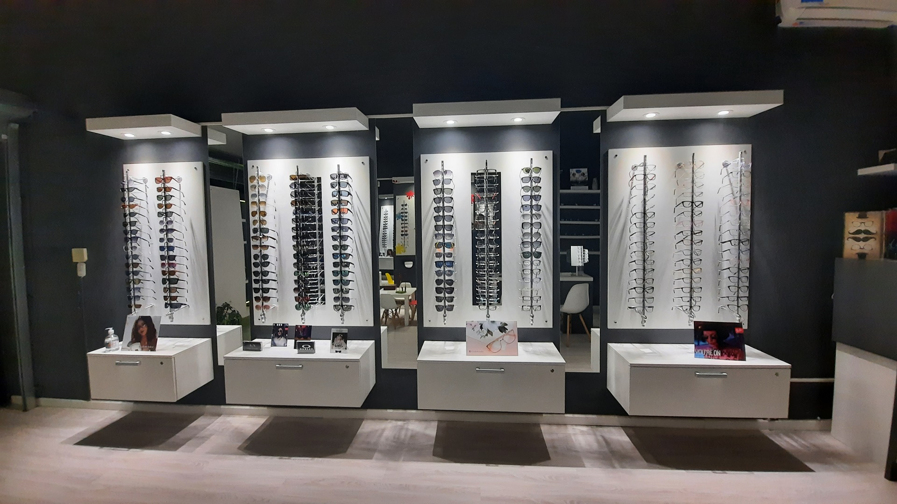

¿Quíenes somos?

Optica Marcolongo es una propuesta en salud visual que prioriza la calidad y el servicio. Focalizamos
nuestros esfuerzos en lentes recetados, de sol y contactología. Contamos con marcas como: Ray Ban, Armani,
Oakley, Vogue, Mormaii, Paula Cahen D´Anvers, Elizabeth Arden, Essilor, entre otras. Niños, adolescentes y
adultos encontrarán en Optica Marcolongo productos diseñados para sus necesidades, respaldados por empresas
nacionales e internacionales de primer nivel.
Nuestra propuesta

La salud visual es un activo poco reconocido. Si bien contamos con nuestra visión para poder desenvolvernos
día a día, nuestros ojos están expuestos a un maltrato permanente. Polución ambiental, exceso de pantallas,
malos hábitos en la limpieza del rostro, accidentes. Todos estos factores, combinados con el paso del tiempo
y la genética, afectan nuestra visión. Para Óptica Marcolongo es un compromiso asumir con responsabilidad su
salud visual. Y acompañarlo al encuentro de la mejor solución posible.